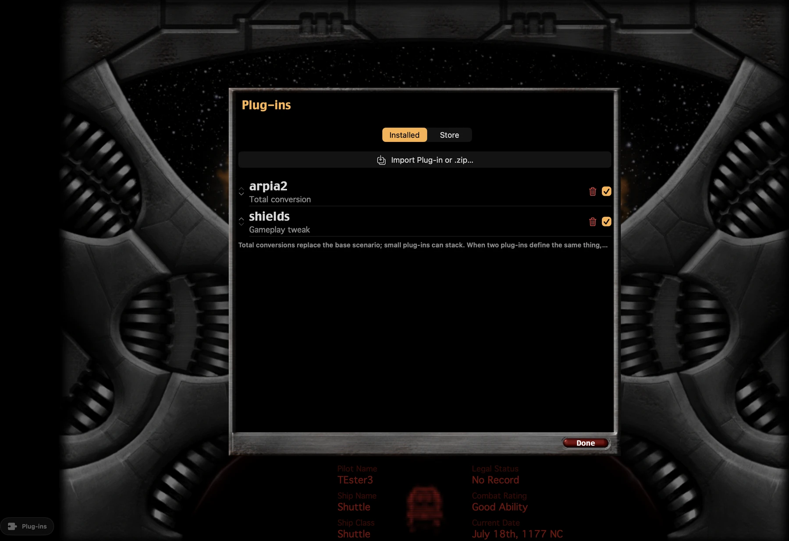

Linux & Steam Deck 0.7.0-beta.1
The first desktop build outside Apple platforms: Linux and Steam Deck, with an experimental macOS build for testing.
Release notes →
The 2002 space classic, taken apart function by function and rebuilt to play exactly like the original. Then given what it never had: multiplayer, controllers, touch, a plug-in store and an editor that runs the game.
Trade, fight, take sides in a war and follow six storylines across hundreds of systems. NOVA Swift reads your own copy of EV Nova and runs it on a new engine, so the ships, missions and story are the real ones.
The Windows executable was decompiled and every gameplay system compared against it: flight, combat, AI, economy, missions, the map. Original behaviour is the default; anything new is an opt-in Enhancement.
See the progressClassic keyboard controls, full gamepad support with action wheels, a controller cursor for every menu, and touch controls built for a phone. Steam Deck and Apple TV play from the couch.
Controls guideEach player keeps their own galaxy and pilot. Jump into the same system and you play together: escort, fight side by side, or duel. Game Center on Apple, servers and direct IP everywhere.
How multiplayer worksClick any shot to enlarge.
Multiplayer is an overlay on your own game. Everyone keeps their own save and roams freely; when two pilots meet in a system, that system syncs completely. "I'm stuck, come help me" is one jump away.
On Apple devices, play over Game Center or local Wi-Fi and find open lobbies in the public list. On Linux, Steam Deck and Windows, join by address, browse LAN games, or pick a community server. Cross-play between the two is being wired up now.

Browse the community catalog in the game and install with one tap, or import your own files: old Mac .sit and .hqx archives included. Total conversions, new ships, story add-ons and HD art. Turn any of them off again with a switch.
Edit every resource type, draw the galaxy, lay out systems over a live preview, then press Test Run and fly your plug-in with a debug panel: spawn fleets, grant outfits, set control bits, start missions.
Every portable function of the original game has been compared with NOVA Swift and fixed to match, or replaced on purpose where it has to be (the save format, the controls). That's how much has been checked, not a promise there are no bugs; NOVA Swift is in beta.
If something plays differently from the original, it's a bug. Report it.

The first desktop build outside Apple platforms: Linux and Steam Deck, with an experimental macOS build for testing.
Release notes →TestFlight on Mac, iPhone, iPad and Apple TV. A beta build for Linux and Steam Deck. Windows is next.
DownloadsNOVA Swift ships no game data. Point the setup wizard at your copy of EV Nova and it imports everything it needs.
Setup guidePick a starting scenario, or import a pilot from the original. Your first trade run is a landing away.
First flightEV Nova's content belongs to its owners. NOVA Swift ships no game data and never will. It reads a copy you own, the same way OpenMW and OpenRA work. Where to get EV Nova.